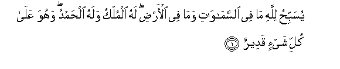
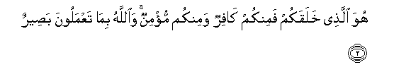
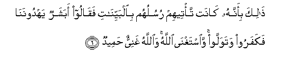
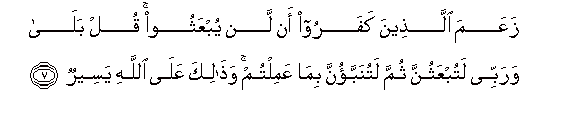
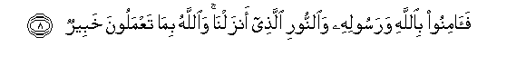
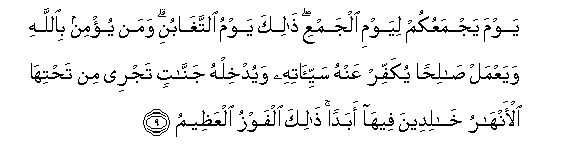
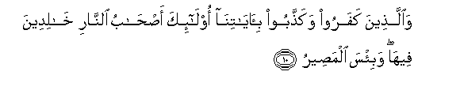

Sacred Texts Islam Index
Hypertext Qur'an Unicode Palmer Pickthall Yusuf Ali English Rodwell
Sūra LXIV.: Tagābun, or Mutual Loss and Gain. Index
Previous Next

The Holy Quran, tr. by Yusuf Ali, [1934], at sacred-texts.com
Sūra LXIV.: Tagābun, or Mutual Loss and Gain.
Section 1

1. Yusabbihu lillahi ma fee alssamawati wama fee al-ardi lahu almulku walahu alhamdu wahuwa AAala kulli shay-in qadeerun
1. Whatever is
In the heavens and
On earth, doth declare
The Praises and Glory
Of God: to Him belongs
Dominion, and to Him belongs
Praise: and He has power
Over all things.

2. Huwa allathee khalaqakum faminkum kafirun waminkum mu/minun waAllahu bima taAAmaloona baseerun
2. It is He Who has
Created you; and of you
Are some that are
Unbelievers, and some
That are Believers:
And God sees well
All that ye do.
3. Khalaqa alssamawati waal-arda bialhaqqi wasawwarakum faahsana suwarakum wa-ilayhi almaseeru
3. He has created the heavens
And the earth
In just proportions,
And has given you shape,
And made your shapes
Beautiful: and to Him
Is the final Goal.
4. YaAAlamu ma fee alssamawati waal-ardi wayaAAlamu ma tusirroona wama tuAAlinoona waAllahu AAaleemun bithati alssudoori
4. He knows what is
In the heavens
And on earth;
And He knows what
Ye conceal and what
Ye reveal: yea, God
Knows well the (secrets)
Of (all) hearts.
5. Alam ya/tikum nabao allatheena kafaroo min qablu fathaqoo wabala amrihim walahum AAathabun aleemun
5. Has not the story
Reached you, of those
Who rejected Faith aforetime?
So they tasted the evil
Result of their conduct;
And they had
A grievous Penalty.

6. Thalika bi-annahu kanat ta/teehim rusuluhum bialbayyinati faqaloo abasharun yahdoonana fakafaroo watawallaw waistaghna Allahu waAllahu ghaniyyun hameedun
6. That was because there
Came to them apostles
With Clear Signs,
But they said:
"Shall (mere) human beings
Direct us?" So they rejected
(The Message) and turned away.
But God can do without (them):
And God is
Free of all needs,
Worthy of all praise.

7. ZaAAama allatheena kafaroo an lan yubAAathoo qul bala warabbee latubAAathunna thumma latunabbaonna bima AAamiltum wathalika AAala Allahi yaseerun
7. The Unbelievers think
That they will not be
Raised up (for Judgment).
Say: "Yea, by my Lord,
Ye shall surely be
Raised up: then shall ye
Be told (the truth) of
All that ye did.
And that is easy for God."

8. Faaminoo biAllahi warasoolihi waalnnoori allathee anzalna waAllahu bima taAAmaloona khabeerun
8. Believe, therefore, in God
And His Apostle, and
In the Light which We
Have sent down. And God
Is well acquainted
With all that ye do.

9. Yawma yajmaAAukum liyawmi aljamAAi thalika yawmu alttaghabuni waman yu/min biAllahi wayaAAmal salihan yukaffir AAanhu sayyi-atihi wayudkhilhu jannatin tajree min tahtiha al-anharu khalideena feeha abadan thalika alfawzu alAAatheemu
9. The Day that He assembles
You (all) for a Day
Of Assembly,—that will be
A day of mutual loss
And gain (among you).
And those who believe
In God and work righteousness,—
He will remove from them
Their ills, and He will admit
Them to gardens beneath which
Rivers flow, to dwell therein
For ever: that will be
The Supreme Achievement.

10. Waallatheena kafaroo wakaththaboo bi-ayatina ola-ika as-habu alnnari khalideena feeha wabi/sa almaseeru
10. But those who reject Faith
And treat Our Signs
As falsehoods, they will be
Companions of the Fire,
To dwell therein for aye:
And evil is that Goal.